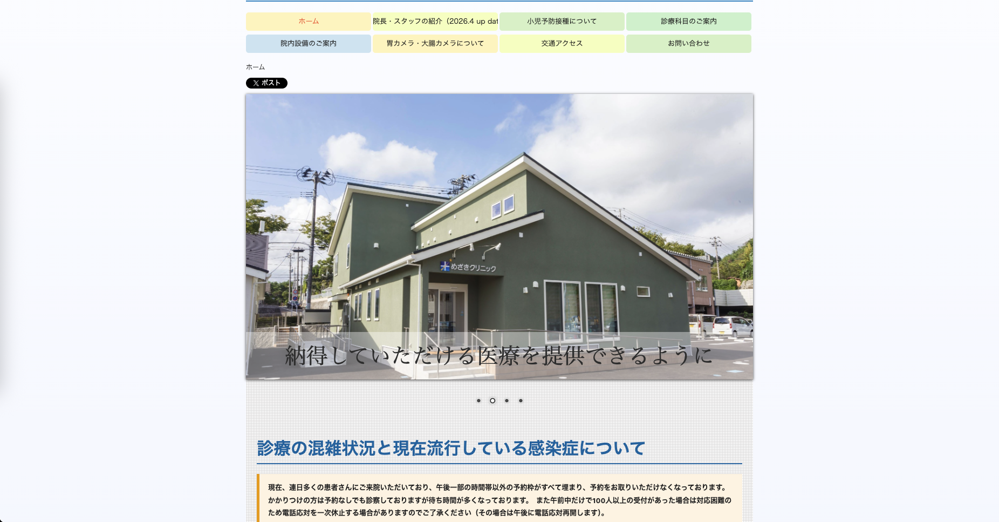
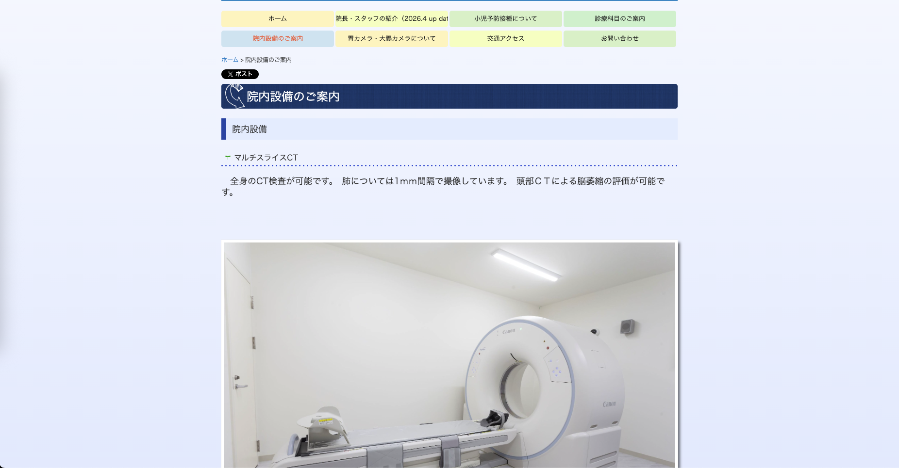

作品一覧へ戻る
医療クリニック公式サイト 新規構築
宮城県仙台市太白区の医療法人公式Webサイトの新規構築。複数診療科目、WEB予約・オンライン診療・無料送迎サービス等、地域密着型医療サービスの情報発信・集患を目的としたサイトを構築。


概要
宮城県仙台市太白区の医療法人公式Webサイトの新規構築。一般内科・呼吸器内科・小児科等の複数診療科目、WEB予約・オンライン診療・無料送迎サービス等を提供する地域密着型クリニックの情報発信・集患を目的としたサイトを、フロントエンドエンジニア（5名体制）として構築しました。
技術的課題
- 診療科目・検査設備・予防接種・送迎サービス等、情報量の多さに対するわかりやすい情報設計
- 高齢者から子育て世代まで幅広い年齢層向けの、直感的で視認性の高いUI設計
- スマートフォンからのアクセスを考慮したレスポンシブ対応
主な担当
- jQuery＋カスタムCSSによるレスポンシブ対応Webサイトの構築（カード型レイアウト）
- ユーザー導線を意識した情報設計（診療科目案内・院内設備紹介・予防接種情報・交通アクセス等）
- Google Fonts（Noto Sans Japanese、M PLUS 1）によるタイポグラフィ設計
- 画像遅延読み込み（Lazy Load）の実装
- Google Analytics・Google Tag Managerの導入
- WEB予約システムとの連携（外部予約サービスとの導線設計）
成果
- 幅広い年齢層の患者が迷わず情報を取得できる、視認性・操作性の高いサイトを構築
- アクセス解析基盤の導入により、データに基づいたサイト改善が可能な運用体制を確立